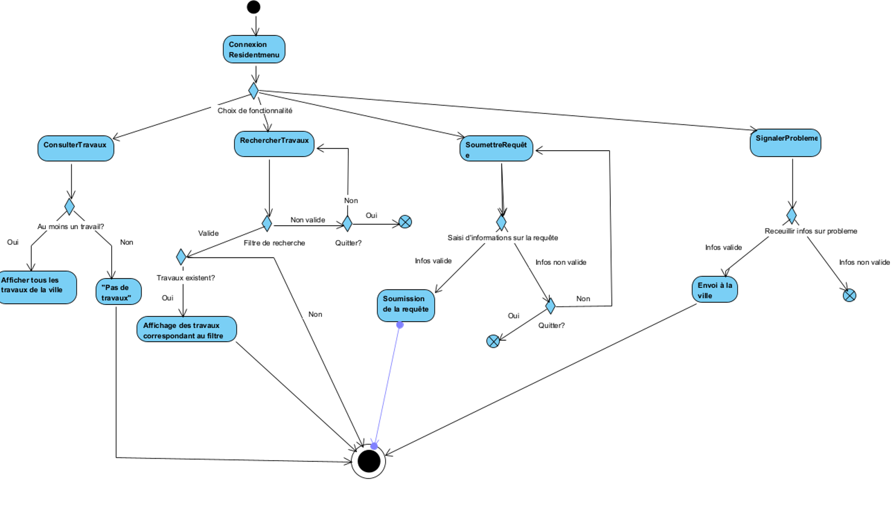

Cadre du projet
Introduction
Plusieurs travaux de construction, de réparation et d'entretien de routes se passent partout au Québec, et bien qu'il y en ait plusieurs, avec chacun leur niveau de difficulté et de temps requis, les citoyens n'en sont pas toujours avertis ou informés. Ce projet établira une connexion entre l'utilisateur du réseau routier et les différentes compagnies privées s'occupant des rues, des boulevards, des autoroutes et autres dans le but d'aider les individus dans leurs déplacements habituels.
Échéancier
Présentation de l'échéancier et la distribution des taches (au moins pour le devoir 1)
Hypothèses (optionnel)
Présentation des hypothèses faites dans l'élaboration des exigences et l'analyse
S'inscrire comme résident
- Le résident possède une adresse valide dans la ville ou région couverte par l'application.
- Le résident a accès à une connexion internet pour s'inscrire via l'application.
Consulter les travaux en cours ou à venir
- Les données sur les travaux publics et privés sont régulièrement mises à jour dans l'application.
- Le résident a bien saisi l'adresse de la zone de recherche (code postal, adresse).
Recevoir des notifications personnalisées
- Le résident a correctement entré ses centres d'intérêts (lieu de résidence, travail).
- Les notifications sont envoyées à temps pour permettre au résident de s'organiser.
Soumettre une requête de travail
- Le résident soumet des informations complètes et précises sur le projet.
Signaler un problème ou autre
- L'application permet un signalement facile (photo, texte, vidéo).
- Les acteurs concernés reçoivent ces signalements et sont en mesure de les traiter.
S'inscrire comme intervenant
- L'adresse de l'intervenant est valide avant inscription.
- L'intervenant dispose des autorisations légales pour soumettre des projets.
Soumettre un nouveau projet de travail
- La ville en collaboration avec les résidents valide les projets de travaux avant de les rendre visibles aux résidents.
- L’intervenant doit fournir des informations complètes et précises (adresse, dates, horaires).
Mettre à jour les informations d'un chantier
- L’application informe les résidents de ces changements (modifications de dates, horaires, etc.).
Exigences
Après de nombreuses rencontres avec le client et une familiarisation avec les activités de recyclage et compostage, nous avons préparé un glossaire rassemblant les termes et expressions clés caractérisant l'environnement.
Glossaire
- Résident
- Citoyen(ne) qui habite dans la ville et à qui les travaux publics peuvent poser problème.
- Intervenants
- Toute organisation ou personne effectuant un travail public.
- Travaux publics
- Travaux se déroulant sur l'espace public (ex : route, autoroute, passage piéton, place publique) et qui bloquent une certaine zone de ces lieux.
- Planification participative
- Une planification des travaux publics faisant participer les intervenants (effectuant les travaux) et les résidents (impactés par ces travaux).
- Notifications personnalisées
- Alerte de travaux publics, proche du lieu d'habitation ou autres centres d'intérêts du résident.
Persona (optionnel)
Cas d'utilisation

Notes à propos du diagramme
- choix des acteurs
- choix des relations
Scénarios
Scénario principal
- Le résident se rend dans la section pour compléter un formulaire et choisi quel type de formulaire il désire remplir (entretien, réparation, construction, ou autres).
- Le résident nomme l'emplacement exacte du problème à résoudre.
- Le système valide si l'emplacement est près de chez lui.
- Le résident donne une description détaillée des travaux à faire. (e.g. nid de poule)
- Le résident écrit l'état actuel du problème. (e.g. profondeur, largeur)
- Description de l'état de dégradation et des risques
- Si cela s'applique: Si des gens se sont blessés à cet endroit et/ou ont eu un accident.
- Le résident renseigne l'ampleur du problème. (e.g. quelques mètres dans la rue, toute la rue, etc.).
- Le résident mentionne si des travaux ont déjà eu lieu à cet endroit pour une raison similaire.
- Date ou approximation de la date de la dernière fois qu'ils sont venus faire des travaux à cet endroit.
- Le résident élabore sur le problème qui peut en être engendré et l'urgence de cette requête.
- Si cela s'applique: Le traffic que ce problème cause, si ça bloque des piétons ou des cyclistes.
- Le résident rajoute des photos à ce rapport si nécessaire.
- Le résident soumet la requête
- Les informations de base (nom, prénom, courriel, numéro de téléphone, addresse) sont déjà inscrit dans l'envoi du formulaire.
- Le système reçoit la requête et l'envoie à la ville concernée, l'arrondissement concernée et aux différents contracteurs privés de cette région qui ont les capacités de remédier au problème.
- Le résident reçoit également une notification sur son compte de la requête soumise.
- Le système ajoute cette requête dans les projets en devenir.
- La requête est ajoutée au cartes, dans flux de notifications des résidents aux alentours d'où cette requête aura lieu et dans la liste de nouveaux projets à consulter
Scénarios alternatifs
Scénario principal
- L'utilisateur se rend à la section où il peut signaler un problème
- Le système affiche une carte des chantiers de construction en cours
- L'utilisateur choisit un chantier de construction où il y a un problème.
- L'utilisateur mentionne quel est le problème
- L'utilisateur envoit cette réclamation.
- Le système envoit cet avertissement à l'intervenant en charge du projet.
- Le système renouvelle le projet en ajoutant ce problème.
Scénarios alternatifs
Scénario principal
- L'intervenant va sur sa page personnel et sélectionne la requête qu'il veut faire.
- L'intervenant remplit un formulaire officiel.
- L'intervenant doit élaborer un plan d'exécution des travaux, l'échéancier et les équipements a utiliser
- L'intervenant estime les coûts de cette requête, des moyens de paiements et des garanties et assurances à faire ce projet.
- L'intervenant mentionne les membres de l'équipe qui vont travailler sur le projet.
- L'intervenant envoit le formulaire
- Le système rattache ce document avec les documents d'informations de bases de cette entreprise de construction (nom de l'entreprise, courriel, numéro de téléphone, adresse, date et certifications de la compagnie).
- Le système envoie ce dossier à l'arrondissement/ville/province (dépendemment du type de projet)
- L'intervenant reçoit une notification du formulaire officiel qu'il a envoyé.
Diagramme d'activités
Connexion et accès au menus dans le cas général
.png)
Menu principal du résident
Analyse
Risques
Besoins non-fonctionnelles
Besoins matériels
Description et justification des ressourcs nécessaires pour le projet...
Solution de stockage
Nous comptons opter pour un stockage de données dans des fichiers CSV, nous envisageons une organisation simple mais structurée. Chaque type de donnée aura son propre fichier CSV dédié. Par exemple, un fichier utilisateurs.csv stockera des informations comme l’ID de l’utilisateur, son nom, son adresse e-mail et son rôle dans l’application. Un autre fichier, travaux.csv, contiendra les détails des travaux, avec des champs comme l’ID du travail, la description, la date de début et de fin, et l’état d’avancement. D’autres fichiers peuvent inclure projets.csv pour les projets en cours et évaluations.csv pour les évaluations des projets ou utilisateurs. Les fichiers CSV offrent une solution de stockage légère et universelle, compatible avec de nombreux logiciels de traitement de données comme Excel ou Google Sheets. Leur format simple et non volumineux permet une gestion facile des données tout en assurant une bonne portabilité entre différents systèmes. Cette approche permet une séparation claire des données, facilitant la gestion et la mise à jour des fichiers. Chaque fichier sera interconnecté par des champs clés, comme l’ID utilisateur, qui servira à lier les différents jeux de données. Par exemple, en reliant l’ID utilisateur dans utilisateurs.csv à l’ID responsable dans travaux.csv, on pourra associer les utilisateurs aux travaux qu’ils supervisent. Cela simplifie l’analyse et permet de travailler avec des outils qui supportent les formats CSV, tout en restant léger et compatible avec les logiciels de traitement de données classiques.
Solution d'intégration
Description de votre solution d'intégration...
Prototype
Indiquez ici les informations nécessaires (commande d'exécution, comptes préconfigurées) pour exécuter et tester le prototype.